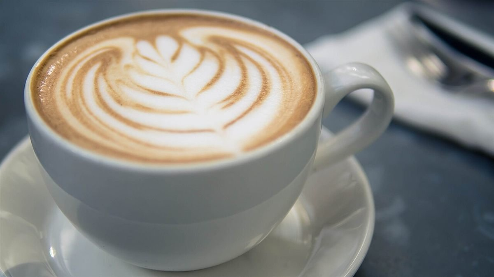
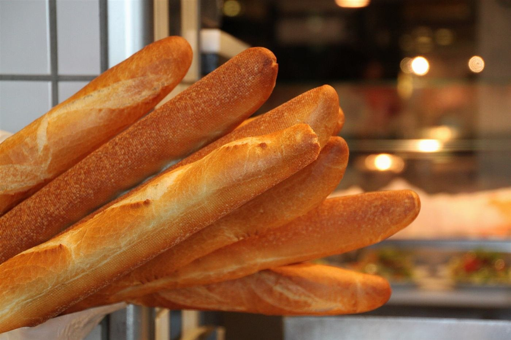
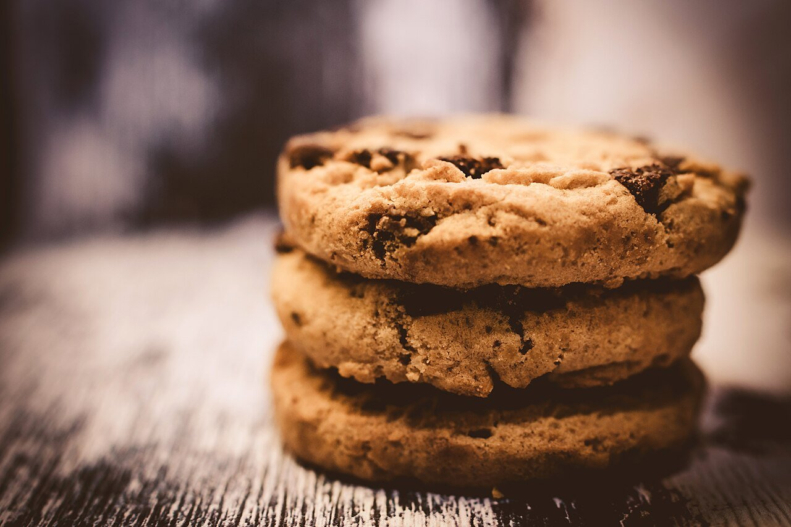
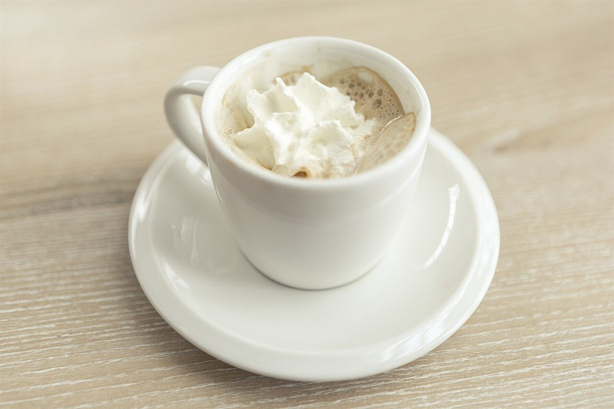

制作側の連想
コーキングガンの部位を、配置図にしてみる
このサイトは、すき間を埋めるための道具「コーキングガン」を図にしたつもりで作りました。六つの部位に番号をふり、上の図と並べています。制作側の連想で、お店の理念・由来とは無関係です。実際の工具の仕様を示すものでもありません。
凡例
六つの部位
- 1ノズル先端の細い口。切った穴の大きさで、出す量が決まる。
- 2カートリッジ充填材が入った筒。ガンの受け台にのせて使う。
- 3フレーム筒を支える骨組み。ガン全体の背骨にあたる部分。
- 4ロッド筒の後ろから押し込む細い棒。引いて外すときは解除する。
- 5トリガー握ると、ロッドを少しずつ前へ送る引き金。
- 6グリップ手で握る持ち手。トリガーと向かい合っている。
ギャラリー(イメージ)
パンとコーヒーの写真




写真はパンとコーヒーのイメージです。お店のものではなく、お店で提供している商品を示すものでもありません。
ご案内
お店のこと(確認できたものだけ)
| 所在地 | 〒632-0045 奈良県天理市福知堂町149-1 |
|---|---|
| 電話 | 準備中 |
| 営業時間 | 準備中 |
| 定休日 | 準備中 |
| ご予約 | 準備中 |
| 駐車場 | 準備中 |
| SNS | Instagram @aoi.neko_produce_byfuwarin |